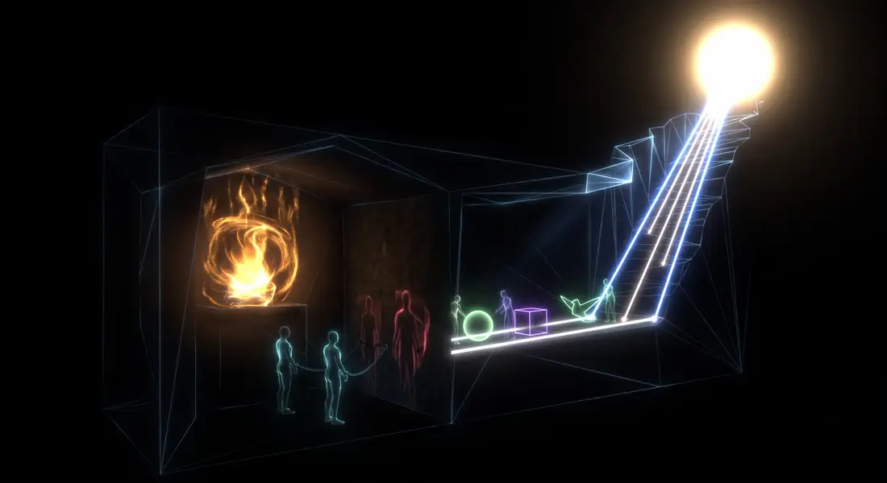
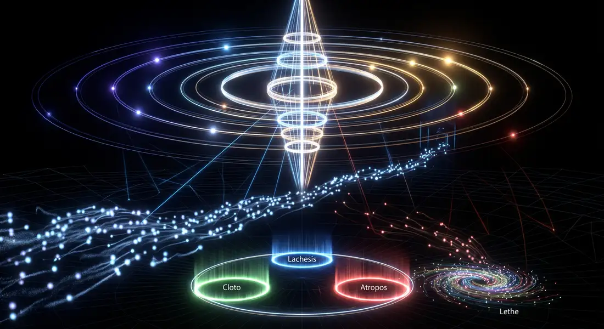
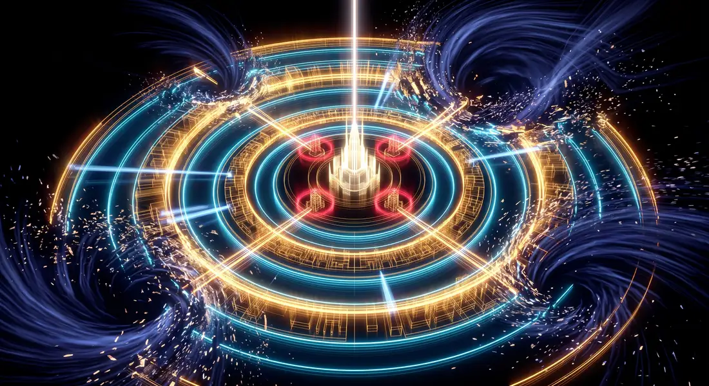
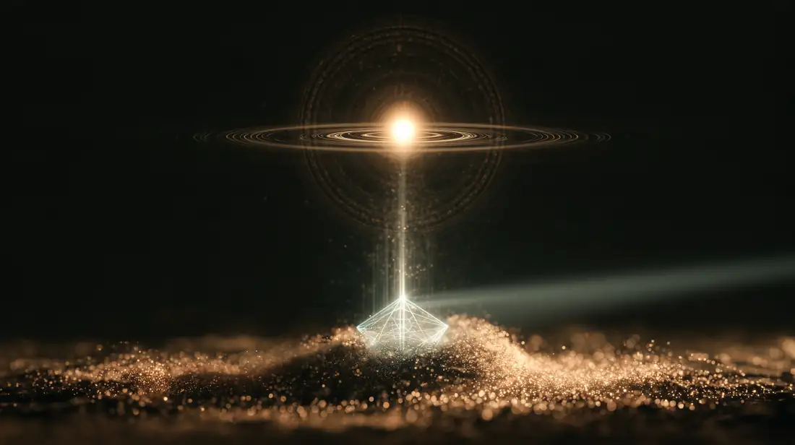
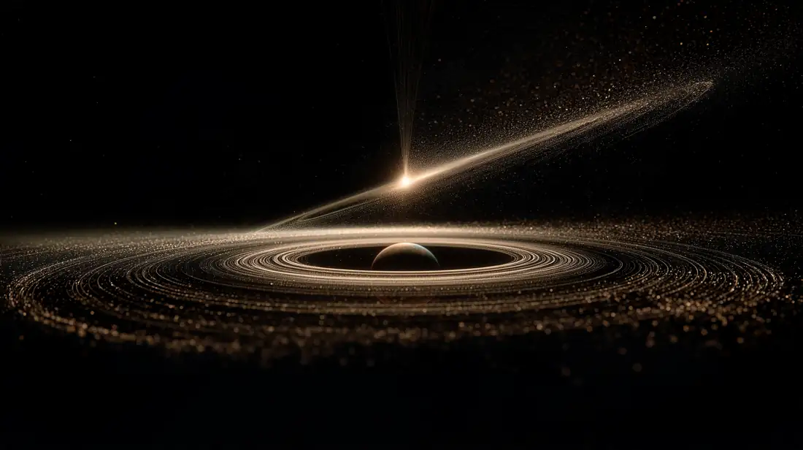
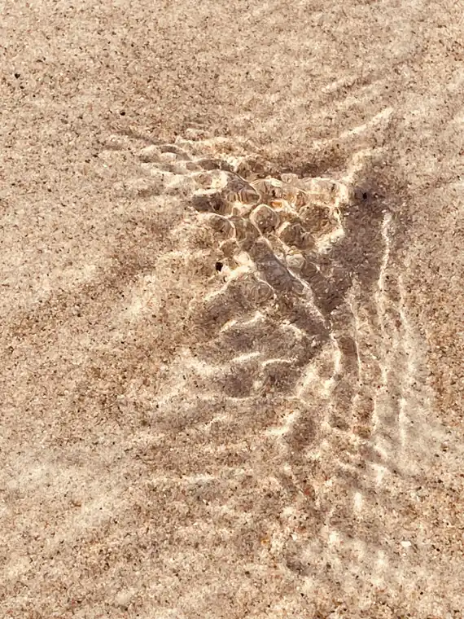
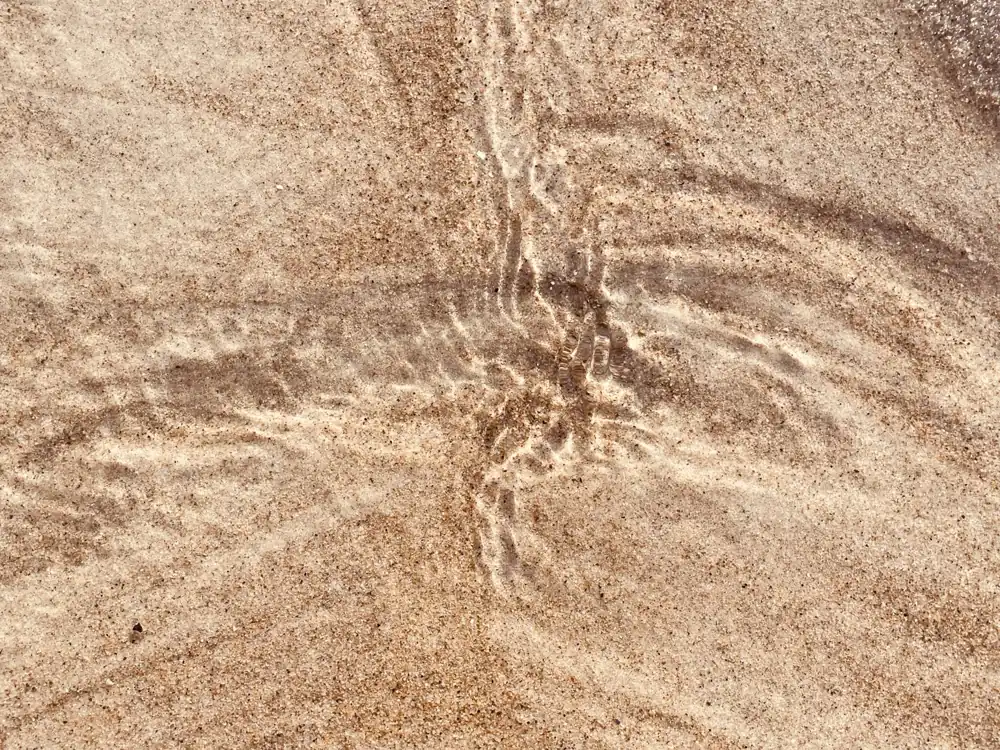
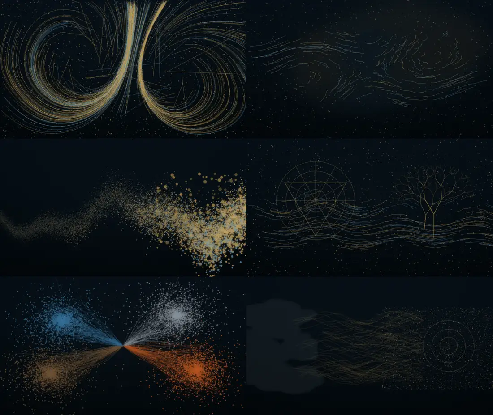

Agorazein
Un verbo griego sin traducción exacta: ir a la plaza a ver qué se dice, comprar, conversar y dejarse llevar sin prisa, con las manos a la espalda. La filosofía griega, dice De Crescenzo, le debe mucho a ese paseo.
“El asombro es la experiencia propia del filósofo: la filosofía no tiene otro principio.”
“Por el asombro empezaron los hombres, ahora y al principio, a filosofar.”
El mapa sigue ese hilo en tres registros que en Grecia nunca estuvieron separados: descubrir cómo es el mundo, inventar formas nuevas para decirlo y detenerse ante lo que no encaja.
El primer tomo de De Crescenzo no empieza con un filósofo sino con un paisaje: un mar de ciudades, unos dioses con límites y la costumbre de ir a la plaza a ver qué se dice. Seis claves para situarse, en paráfrasis.
Un verbo griego sin traducción exacta: ir a la plaza a ver qué se dice, comprar, conversar y dejarse llevar sin prisa, con las manos a la espalda. La filosofía griega, dice De Crescenzo, le debe mucho a ese paseo.
La filosofía ocupa la franja intermedia: busca razones como la ciencia y hace preguntas últimas como la religión. De Crescenzo cita a Bertrand Russell: una tierra de nadie expuesta a los ataques de ambas.
Ni Zeus lo podía todo: por encima de los dioses mandaba Anánke, la Necesidad. De ahí una lección que De Crescenzo considera democrática: ningún poder es absoluto, y el bien se identifica con la medida.
Dioses con todos los vicios humanos y un Olimpo en la cima de una montaña, al alcance de quien quisiera subir a mirar. El paso de los ritos órficos a la observación de la naturaleza marca, para él, el nacimiento de la filosofía.
Tras Troya, héroes y refugiados se dispersan; después, las ciudades griegas se multiplican con un mismo molde: templo, ágora, pritaneo, gimnasio. Para el pensamiento occidental, escribe, Grecia fue un big bang.
De Crescenzo desconfía de la jerga de los especialistas, que sirve para impresionar a los no iniciados, y se propone contar la filosofía con palabras sencillas. Es también la regla de este atlas.
Y antes de todo, Hunu: De Crescenzo imagina a un hombre del Paleolítico tumbado bajo un cielo de agosto sin luna, preguntándose quién encendió esas luces. La religión y la ciencia, el miedo a lo desconocido y la curiosidad, nacen en ese mismo instante. Es el asombro de Platón y Aristóteles, cuarenta mil años antes.
Cada pregunta enlaza estaciones a lo largo del tiempo. La posición horizontal de cada estrella es su fecha. Toca un nombre para volar hasta él.
Antes de los átomos y de las formas, la pregunta fue material: ¿de qué está hecho todo? Cinco respuestas eligieron un elemento, o los cuatro; una se negó a elegir. Después, Platón y Aristóteles heredaron los cuatro y los reordenaron: uno en geometría, el otro con un quinto cuerpo. Cada emblema no ilustra el elemento: se comporta como cada filósofo dijo que se comporta el mundo.
Cómo leerlos. El agua de Tales sostiene un disco que flota; el aire de Anaxímenes respira y cambia de sustancia al condensarse; el fuego de Heráclito se enciende y se apaga con medida; la tierra de Jenófanes guarda conchas entre sus estratos; las raíces de Empédocles se reúnen y se separan; el ápeiron de Anaximandro no es ningún elemento, sino el fondo del que se separan los opuestos. Al final, la herencia: los poliedros del Timeo, donde la tierra es la única que no se transforma, y el cosmos de Aristóteles, con su ciclo de cualidades bajo la Luna y el éter que gira por encima.
La filosofía griega se hizo caminando por calles y plazas. Estas pistas, recogidas sobre todo de De Crescenzo, cruzan lugar, cuerpo y pensamiento. Cada una abre su estación en el mapa.
De Crescenzo intercala entre los griegos a sus «filósofos» napolitanos: vecinos, artesanos y profesores que piensan como Tales o como Diógenes sin haberlos leído. Su editor pidió imprimirlos con otra tipografía para que ningún estudiante los preparara para el examen. Aquí conservamos esa distinción.
Amor en horizontal, Libertad en vertical; sus opuestos son el Odio y el Poder. Cada persona es un punto que se mueve con lo que le pasa. La línea dorada es el «sendero del medio» de los sabios: amar sin oprimir.
Toca el plano para situarte.
De Crescenzo propone que toda historia de la filosofía advierta al lector: en el fondo, sea cual sea tu signo del zodiaco, eres estoico o epicúreo. Seis preguntas para averiguarlo, sin ningún valor científico.
Hacia 260 d.C., en Roma, Plotino lee a sus predecesores sin distancia de museo. Heráclito, Empédocles o Platón le hablan como contemporáneos, y él los hace conversar entre sí. Es la última estación del atlas y, a la vez, su primera relectura. En el mapa, su mirada se dibuja en plata desde Roma.
«Muchas veces despierto del cuerpo hacia mí mismo: quedo fuera de todo lo demás y dentro de mí, y veo una belleza de grandeza asombrosa… Después de ese reposo en lo divino, cuando bajo de la intuición al razonamiento, me pregunto cómo es que ahora bajo, y cómo pudo mi alma llegar alguna vez a un cuerpo.»
La palabra que aquí es «asombrosa» es thaumastón, el mismo θαῦμα con que empieza este atlas. Para responder a su pregunta, Plotino no inventa: vuelve atrás. Abre a Heráclito, a Empédocles, a Pitágoras, a Platón. El atlas entero cabe en ese gesto.
Según Porfirio, el primer tratado que escribió Plotino fue «Sobre lo bello» (I 6); años después volvió al tema en «Sobre la belleza inteligible» (V 8). Entre los dos cabe una estética entera: la belleza no está en la proporción, sino en la vida que la atraviesa; para ver lo bello hay que volverse bello; y el arte, que Platón había llamado copia de una copia, puede remontarse hasta las formas.
¿Es el arte una sombra de una sombra? Tres voces, en orden: la acusación de Platón, el gesto de Plotino ante su propio retrato y su defensa del arte.
Lectura del atlasLa paradoja es fértil. El único retrato de Plotino se hizo de memoria, a partir de la imagen interior que Carterio se formó escuchándolo: justo como V 8 pide que trabaje el arte.
Para Plotino, embellecerse no es añadir sino quitar. Toca la piedra, o usa el botón: cada golpe descubre algo que ya estaba ahí.
Seis ejercicios para clase o estudio, cada uno a partir de un pasaje.
Procedencia. Enéadas III–IV: traducción y paráfrasis propias cotejadas con la versión de Jesús Igal (Gredos, 1985). I 6, V 3, V 8, VI 7, VI 9 y la Vida de Plotino de Porfirio: traducción libre propia desde el griego (ed. Henry–Schwyzer), pendiente de revisión. Numeración: Enéada, tratado, capítulo.
De casi ningún pensador anterior a Platón se conserva una obra completa. Cada cita del mapa indica de dónde procede.
En este espacio, el mito no disfraza la verdad: la hace respirable.
La razón griega nace proclamando la muerte del mito, pero Platón lo convoca de nuevo. No como un retroceso a la superstición, sino como el único lenguaje que se sostiene cuando la lógica toca su propio abismo: el alma, la muerte, el amor, el orden del cosmos. Expulsa a los poetas de su república con una mano mientras con la otra escribe algunas de las páginas más deslumbrantes de la literatura.
Una caverna, un soldado que despierta en su pira, una isla tragada por el mar. No son adornos para amenizar una lección: son máquinas de intuición, construidas para obligarnos a ver lo que las palabras técnicas apenas señalan. Aquí se recorren en luz.
Arrastra para girar · Ctrl + rueda para acercar
Un mythos es un relato verosímil y poético; una allegoría, un mapa donde cada término corresponde a un concepto. En Platón la frontera se mueve: la Caverna es una imagen (eikón) que la tradición llama mito. Toca cada figura: las tres en azul se abren en el escenario.
Ninguna posición es definitiva: es una lectura del atlas para empezar a discutir.
Un carro que pierde las alas, un cuerpo partido por un rayo, un dios que regala la escritura y una mentira para fundar una ciudad.
Justo antes de la Caverna, Platón construye dos modelos visuales. Son su preparación: la Caverna los pone en movimiento.
Lo que el Sol es para lo visible, el Bien lo es para lo inteligible. Una analogía término a término (508b–509b).
| Mundo visible | Mundo inteligible | |
|---|---|---|
| Principio | el Sol | la Idea del Bien |
| Da | luz | verdad |
| Hace posible | la vista y lo visto | el conocimiento y lo conocido |
| Además | generación y crecimiento | el ser mismo de las Formas |
| Órgano | el ojo, el más «solar» de los sentidos | la inteligencia (noûs) |
Una línea cortada en dos partes desiguales, y cada parte cortada en la misma proporción (509d–511e). Toca un segmento.
Un detalle que Platón no subraya y los geómetras sí: si los dos cortes guardan la misma proporción, los segmentos centrales (pístis y diánoia) salen siempre iguales. La creencia sobre las cosas y el pensamiento matemático ocupan la misma longitud.
Un patrón corpulento y algo sordo (el pueblo); marineros que se disputan el timón sin saber navegar (los demagogos); y, olvidado en cubierta, el único que estudia los astros, las estaciones y los vientos (el filósofo). Los demás lo llaman «mirador de estrellas» (488a–489a).
Eco en el atlas: es la misma burla que recibió Tales al caer en un pozo por mirar el cielo.
Seis nudos que Platón deja abiertos o desata a costa de reformular todo lo anterior. En dos de ellos te toca elegir.
Las tres escenas nacen de imágenes de concepto y de una guía técnica: fondo negro absoluto, líneas de luz, halos, mallas de alambre y partículas con resplandor (bloom). Nada de texturas: solo geometría que brilla.

wireframe azul pizarra, fuego de partículas, sombras proyectadas en tiempo real sobre el muro y haces láser hacia el Sol.
CatmullRomCurve3, tres Moiras y el vórtice del Leteo.
vertex displacement.Cuatro ejercicios que cruzan mito, imagen y técnica.
Con una linterna, objetos recortados y una pared: proyecta sombras para alguien que no ve los objetos. ¿Qué nombres les da? ¿Qué pantalla usamos hoy como muro?
Reparte «modelos de vida» en tarjetas y deja elegir por turnos, como en Er. Ulises, el último, escoge la vida tranquila de un hombre cualquiera. ¿Qué elegiría cada uno sabiendo que después olvidará?
Dibuja una ciudad ideal en anillos concéntricos y, sobre ella, marca en rojo el punto exacto donde empezaría su soberbia.
Thamus teme que la escritura dé apariencia de sabiduría sin sabiduría. Relee el diálogo cambiando «escritura» por «inteligencia artificial». ¿Qué objeción sigue en pie? ¿Qué uso sería remedio y cuál veneno?
Procedencia. República, Timeo, Critias, Fedro, Banquete, Eutifrón, Menón, Parménides y Sofista: paráfrasis propias y citas breves en traducción orientativa, con numeración Stephanus. Texto base del concepto: plat_n_mitos_alegor_as_y_gu_a_visual_three_js.md y notas de PLATONISMO.md. Pendiente de revisión editorial humana.
Aquí la forma no vive en otro mundo: está en las cosas, esperando.
Si Platón miraba hacia arriba, su alumno mira alrededor. Tras veinte años en la Academia, Aristóteles abre en 335 a.C. su propia escuela en un gimnasio junto al santuario de Apolo Liceo y enseña paseando bajo el pórtico, el perípatos. De ese paseo salen la lógica formal, la biología de campo, la física de las causas y la primera anatomía de la ficción.
Un polvo que se hace forma, un razonamiento que no puede fallar, un cielo que gira por amor y una trama que se rompe para curar. Cuatro máquinas de pensar, recorridas en luz.
El paseo · una vida en seis lugares
Hijo de Nicómaco, médico de la corte macedonia. Crece entre instrumentos y cuerpos.
Llega con diecisiete años. Según la tradición, Platón lo llamaba «el lector».
Disecciona, observa, clasifica: la laguna de Pirra como laboratorio.
Preceptor del joven Alejandro durante unos años.
Funda su escuela: biblioteca, colecciones y enseñanza peripatética.
Huye tras la muerte de Alejandro «para que Atenas no peque dos veces contra la filosofía».
Arrastra para girar · Ctrl + rueda para acercar
Aristóteles clasifica lo que puede decirse de algo en diez géneros. La sustancia es el sujeto; las otras nueve le suceden. Toca una palabra de la frase o una categoría: se encuentran entre sí.
En el escenarioLos diez prismas del corredor lógico son estas diez categorías.
No todo conocimiento busca lo mismo. Aristóteles distingue tres familias según su fin: contemplar, obrar bien o producir algo fuera de uno.
Estudian lo que no depende de nosotros. Su valor está en sí mismas, como mirar.
El fin es el obrar mismo. Nadie es justo por saber qué es la justicia, sino haciendo actos justos.
El fin queda fuera de quien produce: una casa, una curación, un poema, un discurso persuasivo.
Lectura del atlasEste atlas es poíesis que habla de theoría para enseñar práxis: una obra hecha para que alguien, al leerla, mire y actúe de otra manera.
La virtud es un hábito que elige el medio entre dos vicios, uno por exceso y otro por defecto. Pero ese medio es «relativo a nosotros» y, en algunos casos, está más cerca de un extremo que del otro. Elige una virtud y busca su lugar.
«Si diez minas de alimento son mucho para alguien y dos son poco, el entrenador no prescribirá seis: quizá sea poco para Milón y mucho para quien empieza.»
La mitad aritmética es la misma para todos; el medio de la virtud, no. Por eso la regla no basta: hace falta phrónesis, la prudencia de quien ve el caso concreto.
Y hay una asimetría que Aristóteles señala: la temeridad se parece más a la valentía que la cobardía, y la prodigalidad más a la liberalidad que la avaricia. El medio se inclina.
Aristóteles no rompe con Platón: lo corrige desde dentro. La misma pregunta, dos direcciones de la mirada.
| Platón | Aristóteles | |
|---|---|---|
| Las formas | existen separadas, en un mundo inteligible | existen en las cosas, unidas a la materia |
| Conocer | recordar lo contemplado antes de nacer | partir de los sentidos y llegar a lo universal por inducción |
| El cambio | sombra y apariencia | paso de la potencia al acto: lo que la ciencia estudia |
| El bien | una Idea única del Bien | se dice de muchas maneras: hay que buscarlo en cada práctica |
| La poesía | copia de una copia; los poetas, fuera de la ciudad | más filosófica que la historia; la tragedia purifica |
| El alma | prisionera del cuerpo | forma del cuerpo vivo, como la visión lo es del ojo |
«Siendo ambos amigos, es piadoso preferir la verdad.»
Lo escribe justo antes de criticar la Idea del Bien de su maestro. La discrepancia, como forma de lealtad. Rafael fijó estas dos direcciones en La escuela de Atenas: uno con el Timeo y el dedo hacia el cielo; el otro con la Ética y la mano extendida sobre el mundo.
Aristóteles llama aporía a un camino sin salida que obliga a pensar. Cuatro nudos que dejó abiertos o desató a su manera, y dos sombras que conviene mirar sin disculpas.
Las cuatro escenas parten de estas imágenes de concepto y de la misma gramática que El Umbral: negro absoluto, líneas de luz y resplandor (bloom). Aquí la paleta gira del cian platónico al oro del polvo y al cristal de la forma.

Points que migra hacia las aristas de un cristal en LineSegments; haz eficiente lateral; orbe final con anillos.
Points y haz rectilíneo de la trama. En la colisión, las partículas cambian de régimen y salen en flujo laminar cian. Un solo destello suave, sin estroboscopio.Cuatro ejercicios que llevan a Aristóteles al objeto, la pantalla y la campaña.
¿De qué está hecho, qué forma lo define, quién o qué lo produjo y para qué existe? Luego pregunta por la causa final de una aplicación concreta: ¿coincide la que declara con la que realmente persigue?
Recoge cinco titulares o anuncios. Reconstruye el silogismo implícito y localiza el término medio. ¿Cuántos esconden un término medio no distribuido?
Elige un hábito digital, como el tiempo de pantalla o la exposición en redes. Nombra el vicio por exceso y por defecto, y describe dónde está tu medio, no el de todos.
Escribe el guion de una pieza breve de vídeo con nudo, peripecia y anagnórisis que coincidan. ¿Qué emoción queda al final? ¿Es catarsis o solo clic?
ColofónEl atlas termina donde empezó, ante algo que cambia y tiene forma.
Procedencia. Categorías, Sobre la interpretación, Primeros Analíticos, Física, Sobre el cielo, Metafísica, Partes de los animales, Ética Nicomáquea, Política y Poética: paráfrasis propias y citas breves en traducción orientativa, con numeración Bekker. La anécdota de Calcis procede de la tradición biográfica antigua. Texto base del concepto: gemini-code-1790759978095.md. Pendiente de revisión editorial humana.
Una película de agua sobre la arena, unos segundos de luz. Y la misma pregunta que en Mileto.
Todo este atlas empezó con un gesto: alguien se detiene ante algo que cambia y se pregunta por qué tiene forma. Este colofón vuelve a ese gesto desde el presente. Una corriente mínima en la orilla, fotografiada hoy, contiene a la vez la fascinación por observar, el placer de pensar sin permiso y el peso de veinticinco siglos de respuestas.
Abajo hay un solo mundo de partículas. No cambia de aspecto: cambian sus reglas. Heráclito, Anaximandro, Demócrito, Empédocles, Platón y Aristóteles lo leen de otra manera, y el mismo sistema se comporta según cada lectura. Primero el fenómeno; después, el nombre.
Mueve el cursor sobre el agua: participas en el flujo, pero no lo gobiernas


Una película mínima de agua sobre arena, atravesada por corrientes que se encuentran, se separan y vuelven a cruzarse. La luz del sol, refractada por una superficie en movimiento, se concentra en líneas y nodos; el microrrelieve de la arena la desvía. El resultado dura segundos y, sin embargo, parece tener estructura.
¿Cómo puede aparecer orden dentro de algo que no deja de cambiar?
No se trata de convertir la playa en una metáfora decorativa de la filosofía griega, sino de reconocer que la experiencia de la phýsis, algo que nace, cambia, se organiza y desaparece, es precisamente el territorio donde empezó la investigación racional griega. Antes de explicar el concepto, el escenario deja contemplar un comportamiento.
La tradición griega sistematizó maneras de preguntar por la naturaleza: causa, proporción, forma, cambio, identidad, elemento, número, demostración. Ese impulso no lleva en línea recta a la ciencia moderna, pero forma parte de la historia que la hizo posible.
El agua ofrece un puente especialmente fértil. Siglos después de los presocráticos, las ecuaciones de Navier–Stokes (Navier, 1822; Stokes, 1845) formularon matemáticamente buena parte de la dinámica de los fluidos. Su comportamiento general sigue guardando problemas abiertos: demostrar que sus soluciones en tres dimensiones existen y se mantienen suaves es uno de los Problemas del Milenio.
La inteligencia artificial no los ha «resuelto». Lo que sí hacen hoy los métodos numéricos, el aprendizaje automático y los modelos híbridos es aproximar, acelerar, explorar y visualizar flujos de enorme complejidad. La abstracción técnica vuelve a la naturaleza de la que partió.
Del asombro nació el logos; del logos, el método; del método, la simulación; y de la simulación, un nuevo asombro ante la phýsis.
El mismo campo de partículas plantea la tensión central del atlas sin convertirla en un duelo con vencedor.
Las apariencias cambian, pero su inteligibilidad parece depender de estructuras que no cambian con cada manifestación concreta. En la escena, el flujo es atraído por una geometría tenue: perturbas el fenómeno y la estructura reaparece.
estructura ↓ hace inteligible fenómeno cambiante
La forma no necesita descender desde una capa separada. Puede surgir de la organización de la materia, de sus disposiciones y de las fuerzas que actúan sobre ella. En la escena se retira la geometría: el patrón nace de reglas locales.
materia + condiciones + potencia
↓ actualización
formaAristóteles para comenzar. Platón para abstraer. Aristóteles para volver al mundo.
Quizá lo profundamente estable no sean formas separadas ni objetos aislados, sino relaciones y estructuras que pueden realizarse en distintos sistemas materiales.Una posición intermedia, cercana al realismo estructural: evita pensar que toda regularidad es una entidad separada del mundo, y también que la abstracción matemática es una invención arbitraria sin contacto con la realidad.
Un único campo de partículas, un único campo de flujo y una capa de cáusticas. Siete estados conceptuales definidos por parámetros, no siete escenas: la historia de las ideas se ve como la transformación de un mismo mundo.

No representar la filosofía. Hacer que el sistema se comporte filosóficamente.
Heráclito no necesita una cita flotando sobre el agua; Platón no necesita una estatua; Aristóteles no necesita un diagrama. Si el comportamiento encarna la idea, el concepto se entiende antes de ser nombrado. Por eso, en el panel, el texto llega después del fenómeno.
No utilizar la tecnología para sustituir el asombro, sino para devolvernos a él con una mirada más profunda.
Una corriente sobre arena parece profundamente aristotélica: la figura emerge de materia, condiciones, fuerzas y transformación. Pero cuando descubrimos que fenómenos distintos comparten las mismas estructuras matemáticas, reaparece la intuición platónica: algo sigue siendo inteligible más allá de cada caso concreto. La tensión no necesita resolverse. Es el motor.
¿La forma ha sido creada por la materia, o la materia ha revelado una forma que ya era posible?
Quizá la forma no esté ni antes de la materia ni simplemente después de ella. Quizá sea la manera en que lo posible se hace inteligible cuando se realiza.
Procedencia. Texto base: atlas_chronous_interludios_physis, reflexión escrita para este atlas a partir de dos fotografías de la orilla (septiembre de 2026). Fragmentos presocráticos en traducción orientativa con numeración Diels–Kranz; Platón y Aristóteles con numeración Stephanus y Bekker. Pendiente de revisión editorial humana.